20 سؤال
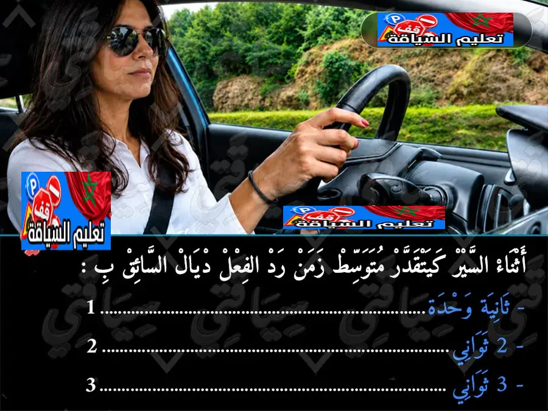
الجواب الصحيح: 1
فهاد السؤال كيسولنا على متوسط زمن رد الفعل ديال السائق، يعني الوقت اللي كيدوز من اللحظة اللي كيشوف فيها السائق الخطر حتى اللحظة اللي كيبدا يتصرف، بحال يضغط على الفرانات أو يدير مناورة باش يتفادى الخطر. فالحالة العادية، إلا كان السائق مركز، واعي، ومافيه لا عياء لا نعاس لا تأثير ديال الكحول أو المخدرات، زمن رد الفعل كيكون فالمتوسط ثانية واحدة. هاد الزمن ممكن يزيد إلا كان السائق عيان، نعسان، مريض، شارب الكحول أو مستعمل شي دواء كيأثر على التركيز، وهادشي كيخليه يتأخر فالتصرف. لذلك الجواب الصحيح هو رقم 1: ثانية واحدة.
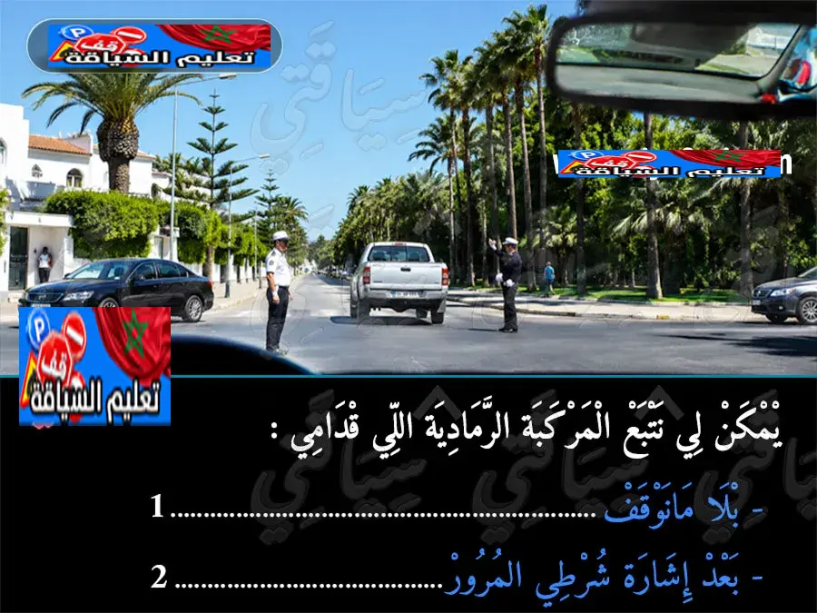
الجواب الصحيح: 1
ما أن شرطي المرور عاطينا الجنب ديالو، فهذا كيعني أن المرور مسموح لينا، ونقدرو نكملو السير ونتبعو المركبة الرمادية بلا ما نوقفو. أما إلا كان الشرطي مقابلنا بوجهو أو معطينا بظهرو، فهنا خاصنا نوقفو ونتسناو الإشارة ديالو باش ندوزو. الجواب الصحيح هو رقم 1: بلا ما نوقف.
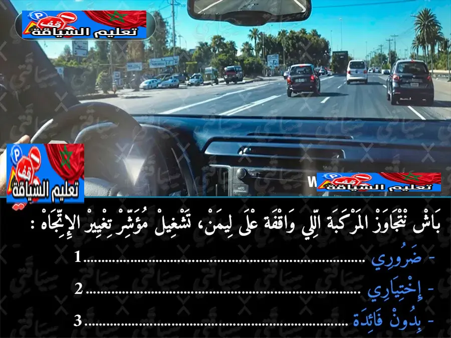
الجواب الصحيح: 1
الجواب هو نعم، ضروري، حيث ملي كنخرجو من المسار ديالنا وكنمشيو شوية لليسار باش ندوزو على مركبة واقفة، كنكونو كنقومو بتغيير الاتجاه أو تغيير الوضعية داخل الطريق، وخصنا نعلمو السائقين اللي مورانا واللي جايين من الجهة الأخرى بالنية ديالنا. المؤشر كيخلي المناورة واضحة وآمنة وكيجنب المفاجآت، لذلك ماشي اختياري وماشي بلا فائدة. الجواب الصحيح هو رقم 1: ضروري.
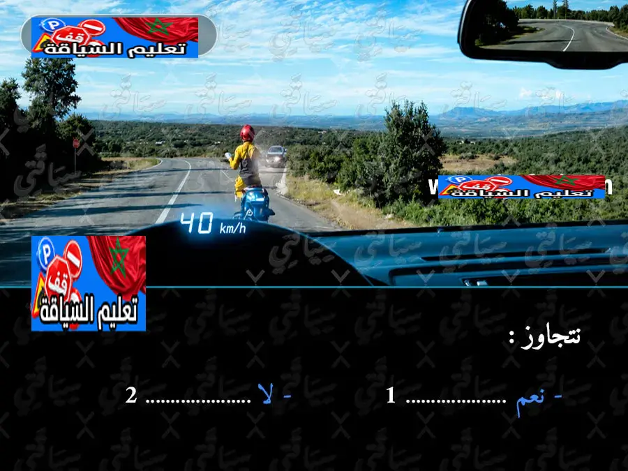
الجواب الصحيح: 2
فهاد الوضعية مايمكنش لينا نديرو التجاوز، حيث حنا قريبين من منعرج والطريق كتدور، والرؤية ماكتكونش واضحة باش نتأكدو واش كاينة شي عربة جاية من الاتجاه المعاكس. التجاوز فبحال هاد الأماكن ممنوع وخطير، حتى إلا كنا غاديين نتجاوزو دراجة نارية، حيث خاص تكون الرؤية واضحة والمسافة كافية قبل ما نبداو عملية التجاوز. إذن خاصنا نبقاو وراء الدراجة النارية ونتسناو حتى نساليو المنعرج وتبان الطريق مزيان، ومن بعد يمكن نفكرو فالتجاوز. الجواب الصحيح هو رقم 2: لا.
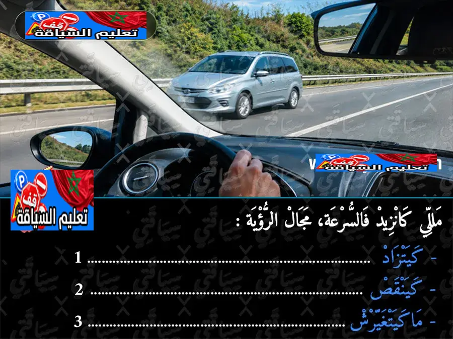
الجواب الصحيح: 2
مجال الرؤية هو المساحة اللي كيقدر السائق يشوفها قدامو ومن الجوانب وهو كيسوق. ملي كتكون السرعة قليلة، السائق كيقدر يراقب الطريق مزيان، ويشوف العلامات، الراجلين، العربات، والعربات اللي جاية من الجوانب. ولكن ملي كيزيد فالسرعة، النظر ديالو كيولي مركز أكثر على الطريق اللي قدامو مباشرة، وكيولي ماكيشوفش الجوانب مزيان، يعني مجال الرؤية كينقص. هاد الشي كيخلي اكتشاف الخطر أصعب وكيحتاج السائق يكون أكثر تركيز ويخلي مسافة أمان كافية. الجواب الصحيح هو رقم 2: مجال الرؤية كاينقص فاش كانزيد من السرعة
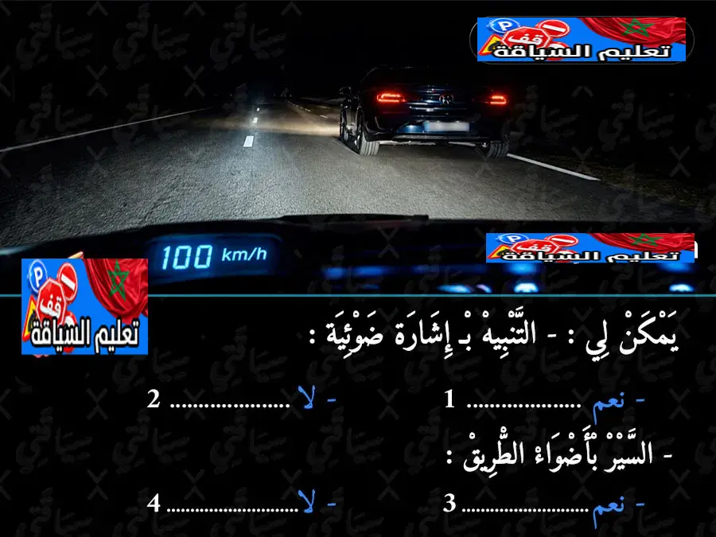
الجواب الصحيح: 1 و 4
فالليل يمكن ليا ننبه المركبة اللي قدامي بإشارة ضوئية قصيرة، يعني فلاش خفيف بالضو، خصوصا إلا بغيت نلفت انتباه السائق فعملية التجاوز، بلا ما نستعمل المنبه الصوتي. ولكن مايمكنش ليا نسير بأضواء الطريق، لأن أضواء الطريق هي الضو القوي، وكيقدر يعمي السائق اللي قدامي من خلال المرايات أو يزعج العربات اللي جاية من الاتجاه المعاكس. أضواء الطريق =الفار= كانستعملوه فقط خارج التجمعات السكنية و ماكانش عربية في الأمام او في الإتّجاه المعاكس. فهاد الحالة يمكن لي التّنبيه بإشارة ضوئية خفيفة، ولكن مايمكنش نسير بأضواء الطّريق بما أنه كاين سيارة قدامي غادي نعميها إلى استعملتهم للسّير. الجواب الصحيح هو رقم 1: نعم و رقم 4: لا.
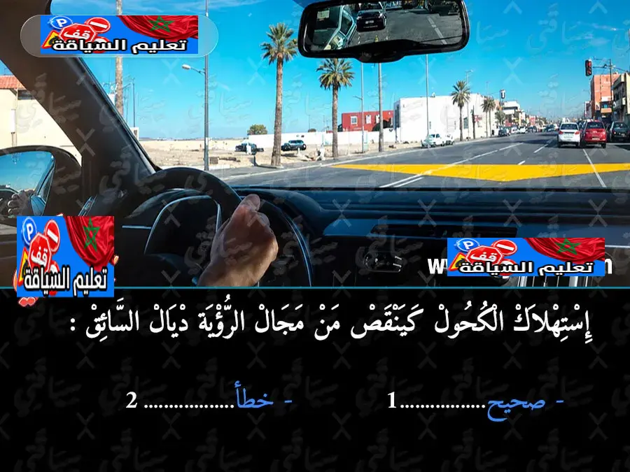
الجواب الصحيح: 1
الكحول كينقص من مجال الرؤية ديال السائق، يعني السائق ماكيبقاش كيشوف مزيان كلشي اللي كاين قدامو ومن الجوانب. مجال الرؤية هو المساحة اللي كتدخل فالنظر ديال السائق وهو كيسوق، وخصها تبقى واسعة باش يقدر ينتبه للراجلين، العلامات، العربات، والدراجات اللي ممكن يجيو من الجنب. ملي كيكون السائق تحت تأثير الكحول، التركيز ديالو كينقص، النظر كيتأثر، ورد الفعل كيتأخر، وهاد الشي كيخليه مايشوفش الخطر فالوقت المناسب. الجواب الصحيح هو رقم 1: صحيح.
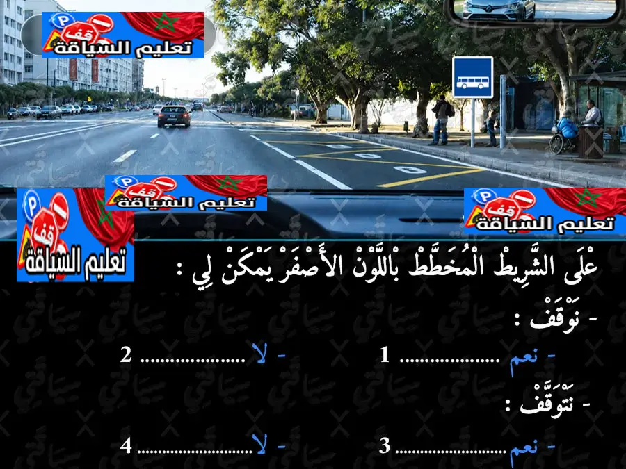
الجواب الصحيح: 2 و 4
الشريط المخطط باللون الأصفر اللي باين فالطريق كيدل على بلاصة مخصصة للحافلات، خصوصا مع وجود علامة محطة الحافلة على اليمين. فهاد المكان مايمكنش ليا لا نتوقف السيارة لمدة طويلة، ولا حتى نوقف لمدة قصيرة باش نطلع أو نهبط شي واحد، حيث غادي نعرقل الحافلات والركاب اللي كيتسناوها فهاد المكان المخصص للحافلات فقط. خاصني نكمل السير ونلقى مكان آخر مسموح فيه الوقوف أو التوقف. الجواب الصحيح هو رقم 2: لا و رقم 4: لا.
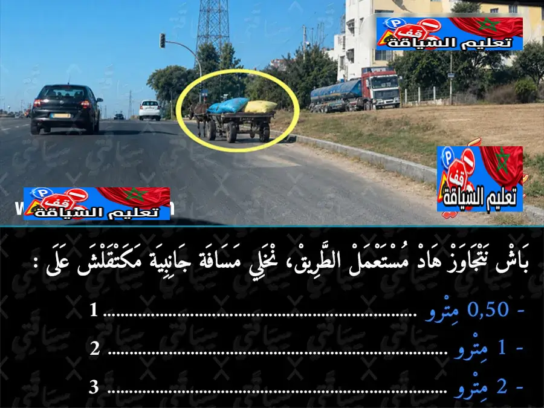
الجواب الصحيح: 2
فعملية التجاوز خاصني نخلي مسافة جانبية كافية بيني وبين مستعمل الطريق اللي غادي ندوز من جنبو، باش ما نضيّقش عليه وما نعرضوش للخطر. حسب التحديث الأخير لمدونة السّير، فعملية التجاوز كنخليو مسافة جانبية ما كتقلش على 1 متر، سواء داخل أو خارج التجمعات السكنية. 2 متر كتكون مرتبطة بالتقابل ماشي التجاوز. التجاوز كانخليو أقل حاجة متر واحد، والتقابل أقل حاجة 2 أمتار. الجواب الصحيح هو رقم 2: 1 متر.
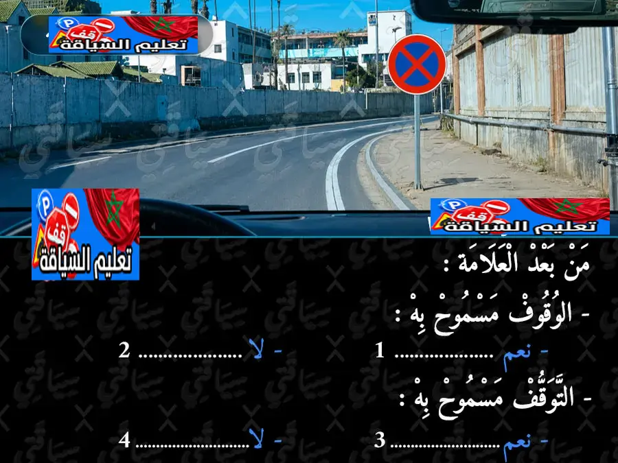
الجواب الصحيح: 2 و 4
هاد العلامة الدائرية الزرقاء بإطار أحمر وعلامة X حمراء كتعني أن الوقوف والتوقف ممنوعين، والمنع كيبدأ من عند العلامة مباشرة. يعني مايمكنش ليا نوقف السيارة فهاد المكان لا لمدة طويلة ولا حتى توقف قصير، حيث العلامة كاتمنع بجوج: الوقوف والتوقف. وبما أن الطريق حتى هي فيها خط متصل على اليمين والوضعية ماكتسمحش بالتوقف بأمان، خاصني نكمل السير ونقلب على مكان آخر مسموح فيه. الجواب الصحيح هو لا للوقوف ولا للتوقف، يعني رقم 2 و 4.
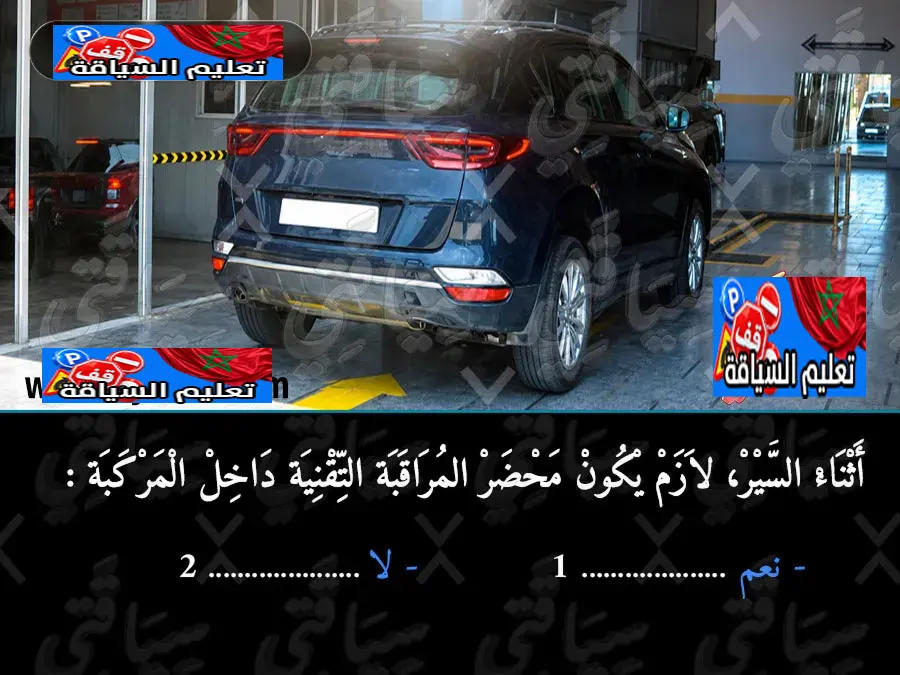
الجواب الصحيح: 1
محضر المراقبة التقنية ضروري يكون داخل المركبة أثناء السير، لأنه من الوثائق اللي خاص السائق يقدمها عند المراقبة باش يثبت أن العربة دازت الفحص التقني وهي صالحة للسير. إلا كان عندك الفحص التقني ولكن الوثيقة نسيتيها فالدار، كيتحرر محضر وكيتم توقيف المركبة إلى حين تسوية المخالفة مع الاحتفاظ بشهادة التسجيل، وعندك أجل 72 ساعة باش تدلي بالوثيقة اللي كتثبت أن العربة خاضعة للمراقبة التقنية. أما إلا ماقدمتهاش فهاد الأجل، كتطبق عليك مسطرة مخالفة عدم الخضوع للمراقبة التقنية. وإذا ماكانش عندك الفحص التقني أصلا، فكتعتبر مخالفة من الدرجة الأولى، فيها غرامة، سحب 3 نقاط، والاحتفاظ بالورقة الرمادية حتى دير المراقبة التقنية وتسوي الوضعية. الجواب الصحيح هو رقم 1: نعم.
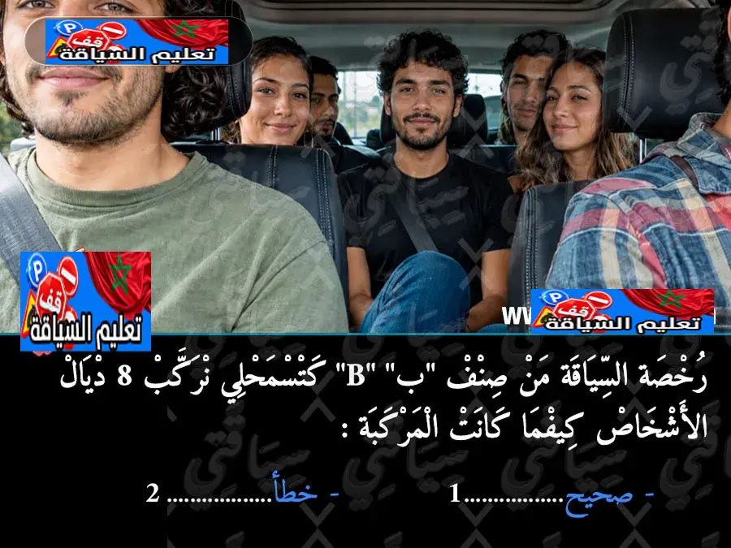
الجواب الصحيح: 2
رخصة السياقة من صنف B كتسمح لينا نسوقو مركبة خفيفة تقدر تركب حتى 8 ركاب زيادة على السائق، ولكن ماشي كيفما كانت المركبة. خاص عدد الأشخاص اللي راكبين يكون مطابق لعدد المقاعد وأحزمة السلامة اللي مجهزة بها العربة. يعني إلا كانت المركبة فيها غير 4 مقاعد، مايمكنش نركبو فيها 5 ولا 6 أشخاص، حتى إلا كان الحد الأقصى فصنف B هو 8 ركاب. إذن مايمكنش نركب 8 ديال الرّكاب معايا كيفما كانت المركبة، والجواب الصحيح هو رقم 2: خطأ.
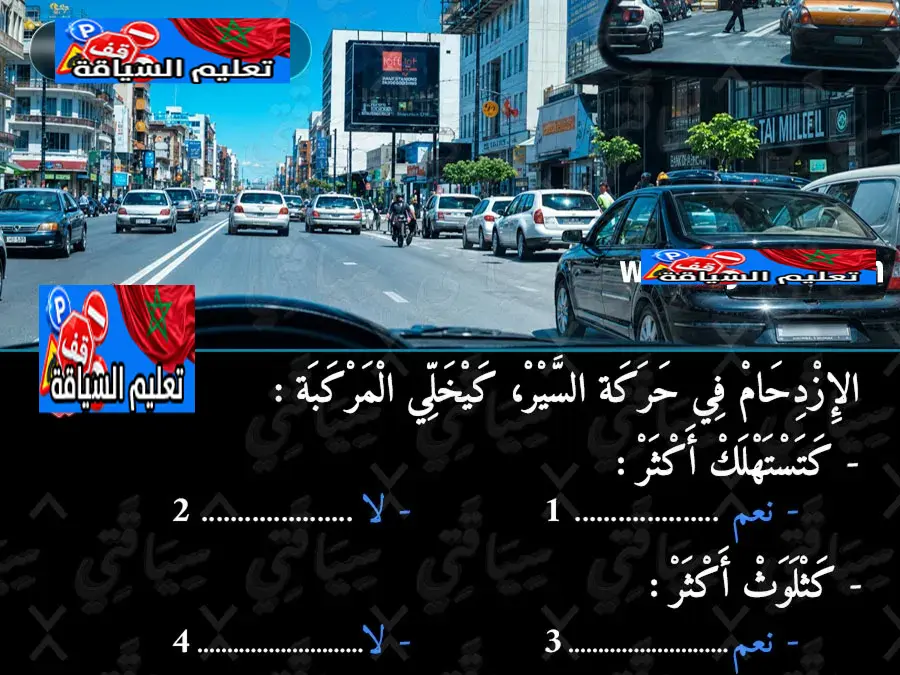
الجواب الصحيح: 1 و 3
الازدحام فحركة السير كيخلي المركبة تستهلك الوقود أكثر، حيث السائق كيبقى يوقف وينطلق بزاف، وكيستعمل السرعات المنخفضة، والمحرك كيبقى خدام حتى فاش السيارة واقفة أو كتتحرك بشوية. هاد الطريقة ديال السير كتزيد استهلاك البنزين أو الغازوال، وكتخلي المركبة تخرج غازات أكثر من العادم، يعني كتزيد حتى فالتلوث. لذلك فوسط الازدحام خاص السائق يسوق بهدوء، يتجنب التسارع والفرملة بزاف، ويحافظ على مسافة مناسبة باش ينقص من الاستهلاك والتلوث. الجواب الصحيح هو رقم 1: كتستهلك أكثر و رقم 3: كتلوث أكثر.
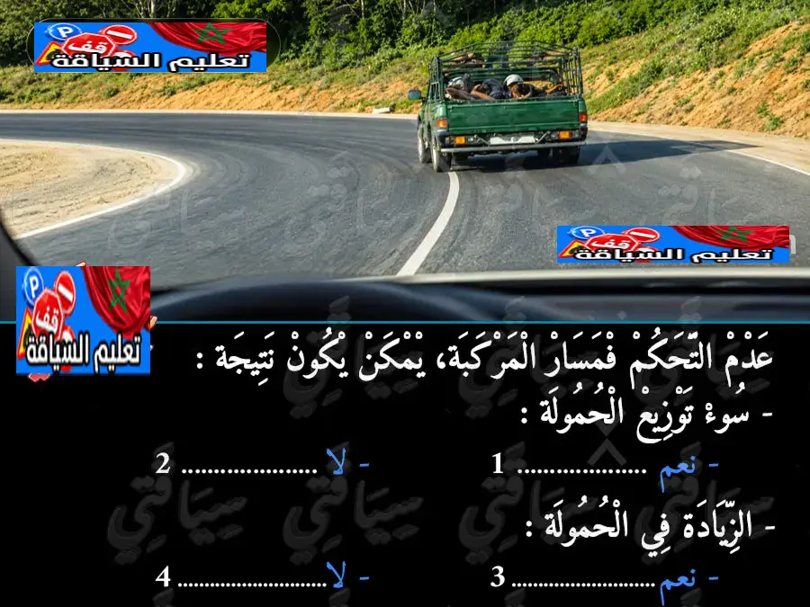
الجواب الصحيح: 1 و 3
عدم التحكم فمسار المركبة يقدر يكون بسبب سوء توزيع الحمولة، حيث إلا كانت الحمولة مركزة فجهة وحدة أو محطوطة بطريقة غير متوازنة، السيارة كتقدر تميل ويفقد السائق السيطرة عليها خصوصا فالدوران أو الفرملة. وكذلك الزيادة فالحمولة كتأثر على توازن العربة، كتطول مسافة الفرملة، وكتضغط على العجلات والمساعدات، وكتخلي التحكم فالسيارة أصعب. لذلك خاص الحمولة تكون موزعة مزيان وما تفوتش الوزن المسموح به. الجواب الصحيح هو رقم 1: نعم و رقم 3: نعم.
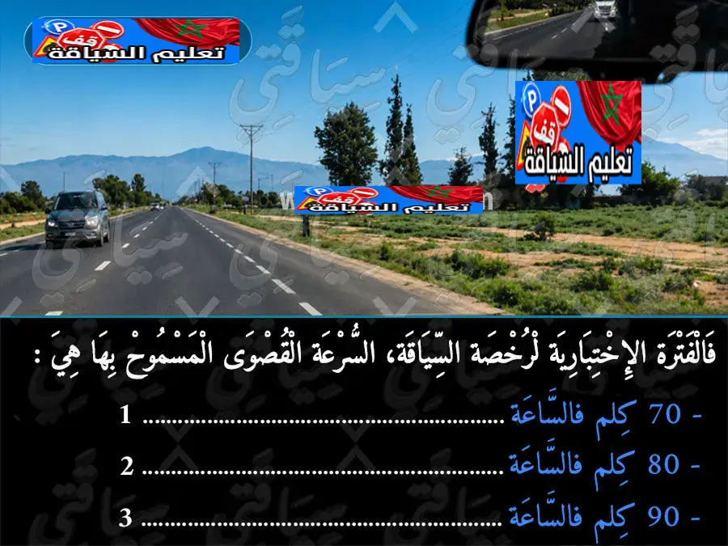
الجواب الصحيح: 3
السائق اللي باقي فـ الفترة الاختبارية ديال رخصة السياقة، يعني أول عامين منين كياخذ الرخصة، ماخاصوش يفوت 90 كلم فالساعة كسرعة قصوى، حتى إلا كان فطريق كتسمح بسرعة أكثر. خلال هاد العامين خاص السائق الجديد يبقى ملتزم بهاد الحد لأنه باقي فمرحلة اكتساب التجربة. من بعد ما كتسالي الفترة الاختبارية وكتولي الرخصة نهائية، يقدر يسوق حسب السرعة المسموح بها فالطريق، والحد الأقصى فالمغرب كيقدر يوصل حتى 120 كلم فالساعة فالطريق السيار إلا ماكانتش علامة كتفرض سرعة أقل. الجواب الصحيح هو رقم 3: 90 كلم فالساعة.
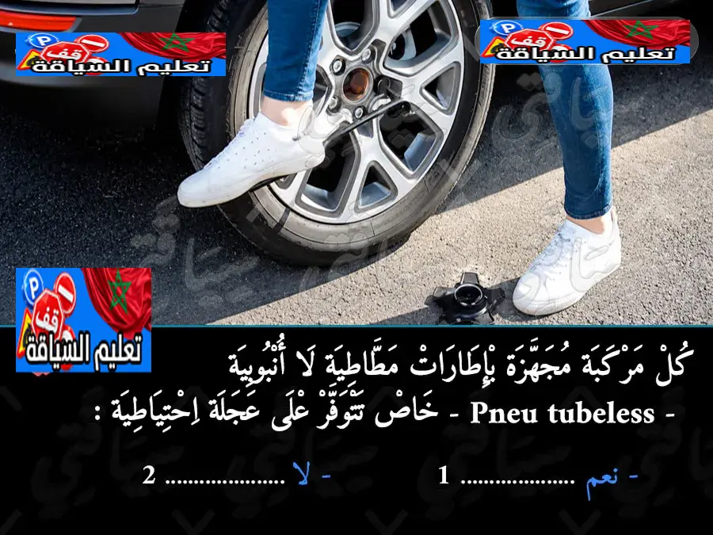
الجواب الصحيح: 1
العجلة المطاطية لا أنبوبية يعني Pneu tubeless هي عجلة ما فيهاش الشمبر الداخلي، ولكن هاد الشي ماكيعنيش أنها ماكتتقبش أو مايمكنش تفرغ من الهواء. إلا تضررات العجلة فالطريق، السائق خاصو يكون قادر يبدلها باش مايبقاش واقف فبلاصة خطيرة أو يكمل السياقة بعجلة ناقصة فالهواء. لذلك كل مركبة مجهزة بإطارات مطاطية لا أنبوبية خاصها تكون متوفرة على عجلة احتياطية صالحة للاستعمال. الجواب الصحيح هو رقم 1: نعم.
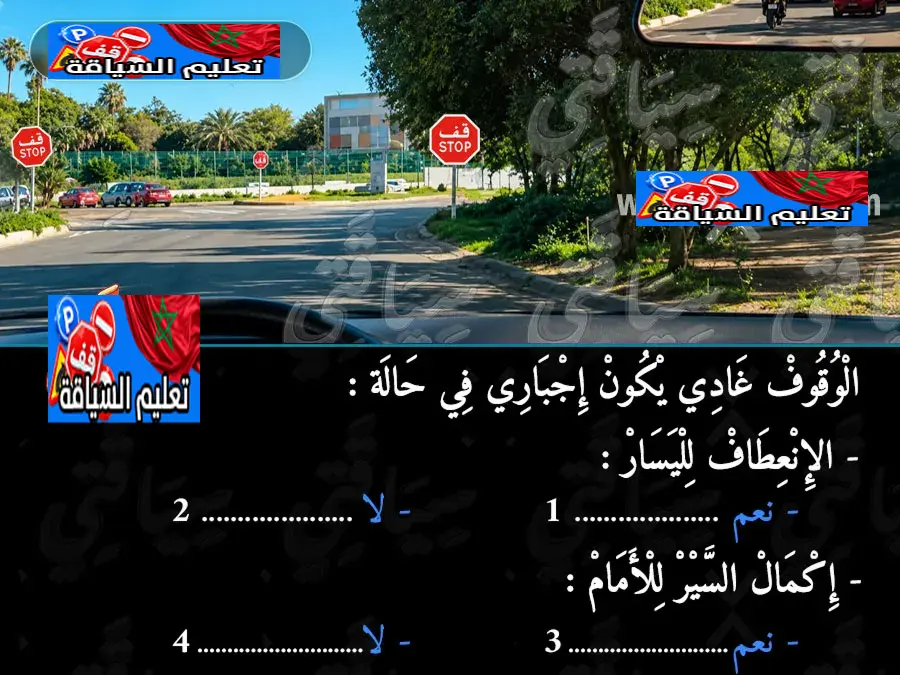
الجواب الصحيح: 1 و 3
علامة قف STOP اللي باينة على اليمين كتفرض علينا التوقف التام قبل ما ندخلو للملتقى، يعني ماشي غير نقصو السرعة. هاد التوقف كيكون إجباري سواء بغينا ندورو لليسار أو بغينا نكملو السير للأمام، لأن العلامة كتطبق علينا قبل دخول التقاطع، وماشي مرتبطة باتجاه واحد فقط. من بعد ما نوقفو، كنراقبو مزيان، وكنعطيو الأسبقية للمستعملين اللي عندهم الحق، ومنين كتكون الطريق خالية كنواصلو السير. الجواب الصحيح هو رقم 1: نعم و رقم 3: نعم.
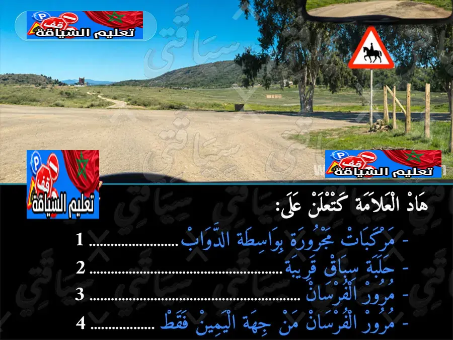
الجواب الصحيح: 3
هاد العلامة مثلثة بإطار أحمر، يعني علامة خطر وتنبيه مسبق للسائق باش يزيد الحذر. الرمز اللي داخل العلامة فيه فارس فوق حصان، وهاد الشي كيعني أنه ممكن نلقاو مرور الفرسان فهاد المنطقة أو عبور ديال الخيول للطريق. ماشي المقصود مركبات مجرورة بالدواب، وماشي حلبة سباق قريبة، وحتى ماكاتعنيش أنهم غادي يجيو من جهة اليمين فقط، لأن العلامة كتنبه بصفة عامة لخطر مرور الفرسان من أي جهة. خاصني نقص السرعة ونبقى واجد نفرمل إلا بان شي فارس كيعبر الطريق. الجواب الصحيح هو رقم 3: مرور الفرسان.
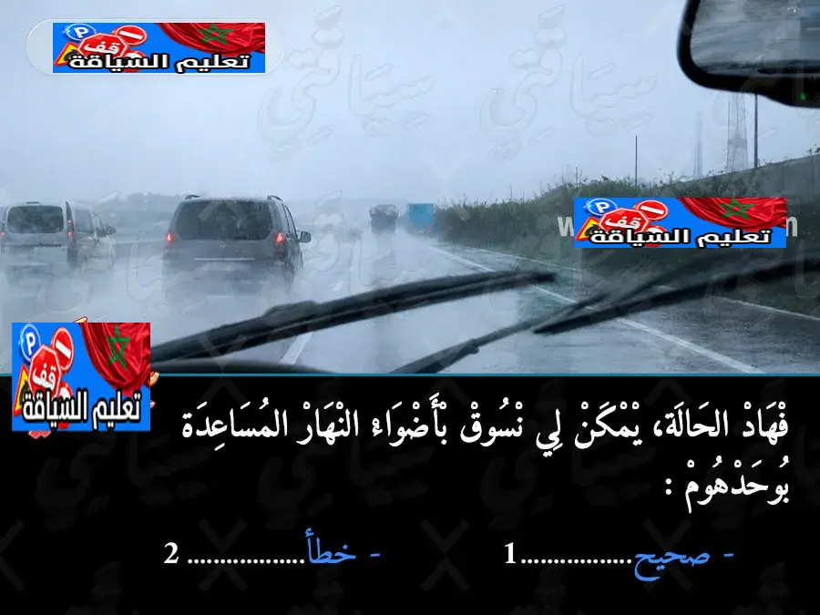
الجواب الصحيح: 2
فحالة المطر والرؤية ناقصة، مايمكنش نسوقو غير ب أضواء النهار المساعدة بوحدهم، حيث ماكيكفيوش باش السيارة تبان مزيان وماكيعطيوش إضاءة كافية للطريق. خاصنا نستعملو أضواء الوضع مع أضواء التقابل، و يمكن نزيدو أضواء الضباب الأمامية فقط لانه مسموح بها فالمطر، باش تعاوننا نشوفو الطريق. أما أضواء الضباب الخلفية وأضواء الطّريق ماكنستعملوهاش فالمطر فهاد القاعدة. إذن الجواب الصحيح هو رقم 2: خطأ. مايمكنش نسوقو غير ب أضواء النهار المساعدة بوحدهم
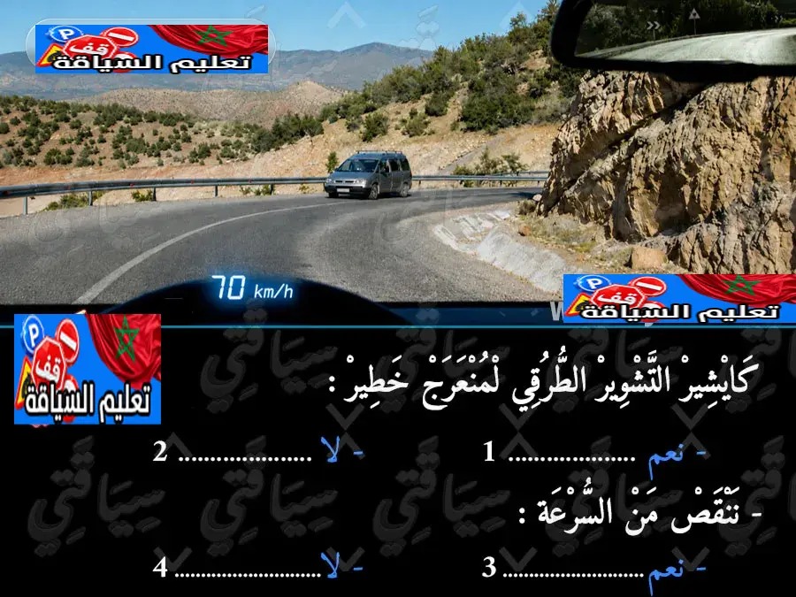
الجواب الصحيح: 1 و 3
التشوير الطرقي اللي باين قدامنا كيشير لمنعرج خطير، حيث الخط المتصل كيبان مائل وكيدور لليمين بشكل واضح، وهاد الشكل كينبه السائق أن الطريق غادية تدخل فمنعرج خطير والرؤية ما غاديش تبقى واضحة. حتى فالمراية الداخلية نقدر نلاحظ علامات كتنبه لوجود منعرج خطير فالطريق. وبما أننا قريبين من منعرج خطير، خاصنا ضروري ننقصو من السرعة ونبقو مركزين، حيث ممكن تظهر لينا عربة جاية من الاتجاه المعاكس أو يضيق علينا المسار فجأة. الجواب الصحيح هو رقم 1: نعم و رقم 3: نعم.